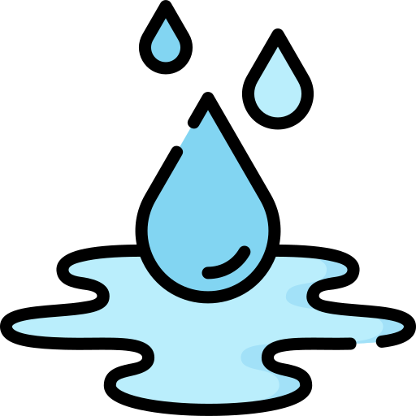
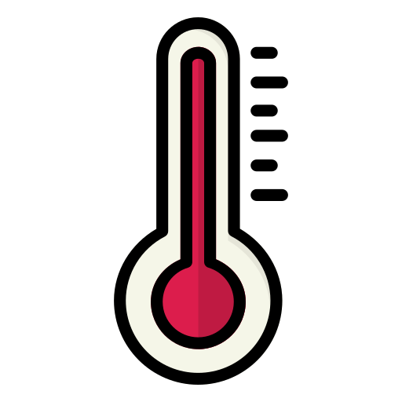
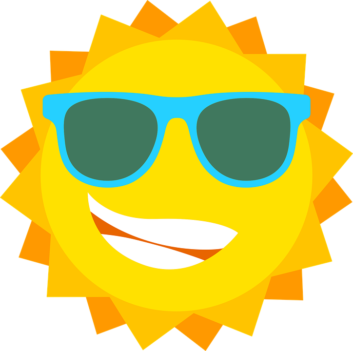

Funciona a través de dos micro-sensores que se calibran, y devuelven un porcentaje de humedad de la zona seleccionada.
Este sensor se sumerge en el agua o en la zona en la que se quiere medir el nivel de sal. Dispone de dos extremos, los cuales miden los impulsos eléctricos que se generan entre ellos, provocados por la sal.
Este sensor permite medir la temperatura mediante una señal eléctrica. Proporciona los datos en grados centígrados. Tras la calibración, mide la temperatura en la zona deseada.
Este sensor permite conocer el grado de iluminación de un entorno concreto. Esto permitirá un gran ahorro de energía.
